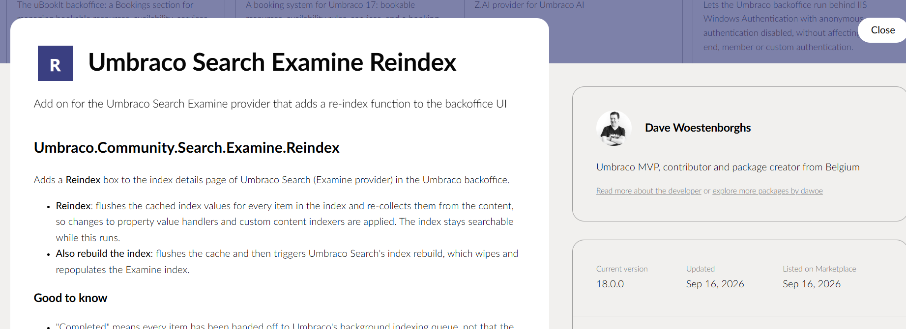
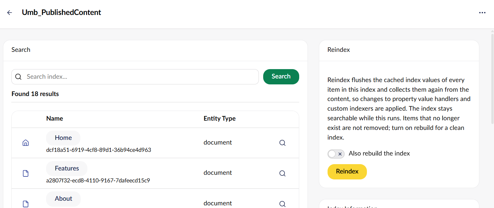

Dave Woestenborghs
- Work at Truelime
- Umbraco MVP (11x)
- Working with Umbraco since 2008
- Part of the 24 days in Umbraco team

Examine
Examine is a provider based Indexer/Searcher API and wraps the Lucene.Net indexing/searching engine. Examine is not exclusive to Umbraco and can actually be used as a completely stand alone component on any project that needs a fast index and search.

Umbraco Examine
Umbraco Examine is the Umbraco implementation of Examine. Umbraco Examine is a combination of Umbraco, Examine and Lucene.Net and uses Umbraco as the data source for its Lucene index.
Umbraco Examine
Examine is used for
- Backoffice search
- Delivery API
- Search queries on the website
Tightly coupled

Examine
Codegarden 2025
I attended the talk "The future of (Umbraco) search" by Kenn Jacobson, where he introduced the Umbraco Search Abstractions.

Umbraco Search
Umbraco Search introduces a new, provider-based search architecture.
It gives developers one consistent way to express advanced search: full-text querying, filtering, faceting, sorting, language and segment support, results that respect protected-content access, and indexing of Umbraco's property editors, and, because it's provider-based, the freedom to plug in the search engine of your choice.
Umbraco Search

Umbraco Search
Examine will remain the default search provider out of the box with Umbraco.
Umbraco Search
For Umbraco 17 and 18 it is available as a package. From version 19 it will replace the current Examine implementation in the CMS.
Installation
Multiple NuGet packages cover different aspects of search:
-
Umbraco.Cms.Search.Corecontains the core functionality. -
Umbraco.Cms.Search.BackOfficeallows Umbraco Search to power the backoffice content search. -
Umbraco.Cms.Search.DeliveryApiallows Umbraco Search to power the Content Delivery API. -
Umbraco.Cms.Search.Provider.Examineis the default search provider implementation.
Activation
internal sealed class SiteComposer : IComposer
{
public void Compose(IUmbracoBuilder builder)
{
builder
.AddSearchCore()
.AddBackOfficeSearch()
.AddDeliveryApiSearch()
.AddExamineSearchProvider();
}
}
Index naming
| Examine | Umbraco Search |
|---|---|
| ExternalIndex | Umb_PublishedContent |
| InternalIndex | Umb_Content |
| MembersIndex | Umb_Members |
| Umb_Media | |
| DeliveryApiContentIndex |
Optimizing server resources
Umbraco keeps the default indexes up to date with content changes. Since we are no longer using them we can disable them.
public void Compose(IUmbracoBuilder builder)
{
builder.DisableDefaultExamineIndexes();
}
Zero down time indexing
"Umbraco": {
"CMS": {
"Search": {
"Examine": {
"ZeroDowntimeIndexing": true
}
}
}
}
Search by query
Filtering
Multiple filters can be applied in a single query, and multiple values can be defined
for each filter. Umbraco Search performs an AND search between filters,
and an OR search between filter values.
Filters can be negated, in which case Umbraco Search will perform an
AND NOT.
Filtering
Range filtering
Numeric and date filters also exist in a range version.
Filtering
A filter must match the index value type of the field, otherwise an exception will be raised or the search will yield no results.
A full list for built-in property editors can be found in the documentation.
Sorting
You will have to configure the field to be sortable.
Sorting
It's important that whenever you make changes to field configuration you rebuild the index so the changes take effect.
This can be done from the new Search UI in the backoffice Settings section.
Sorting
Facets
Configure a field to be facetable.
Facets
Pass facets to search.
Facets
Protected content
Property value handlers
Property value handlers tell the index how data from the property editor should be indexed, similar to how a property value converter is used for rendering.
If a property editor does not have a property value handler, the property will not be indexed.
Property value handler
Content indexers
When content changes, Umbraco Search gathers data for indexing using content indexers.
Out of the box system fields and property values are indexed.
Content indexers
Database cache
All content index data gathered by the content indexers is cached in the database. This allows for efficient index rebuilding when required.
Database cache
Update database cache
- Manually save affected content
- Programmatically trigger an index refresh for affected content
- Programmatically flush the index cache and rebuild
Shameless plug

